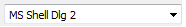

-
Содержание
-
Общие сведения
-
Создание и редактирование записок
- Добавление новой записки
- Изменение записки
-
Работа с Note
Панель форматирования удобный многофункциональный инструмент редактирования содержимого заметок.
Функционал панели форматирования:
- Выбор шрифта осуществляется через . При
нажатии, появится подменю с списком доступных шрифтов. Список шрифтов
можно расширить собственными, для этого в папку с программой, в папку fonts копируются файлы шрифтов, которые хотите добавить
- Изменение размера текста осуществляется через . Нажатие на вызовет подменю с списком доступных размеров. Нажатие на увеличит текущий размер текста на ближайший больший. Нажатие на увеличит текущий размер текста на ближайший меньший
- Выделение текста может быть жирным или курсивом
- Изменение цвета текста осуществляется через кнопку .
Нажатие на эту кнопку вызовет подменю с списком стандартных цветов.
Если нужного цвета нет в списке, тогда выбор элемента "Другое..."
списка вызовет диалог выбора цвета
- Очищение выбранного текста от форматирования выполняет кнопка . Любое форматирование вплоть до таблиц и списков, будет убрано. При очищении текст не будет удален
- Текст можно сделать подстрочным с помощью кнопки , а надстрочным с помощью
- Подчеркивание текста выполняет кнопка
- Надчеркивание текста выполняет кнопка
- Зачеркивание текста выполняет кнопка
- Выравнивание текста осуществляют кнопки:
- по левому краю
- по центру
- по правому краю
- по ширине
- Создание списков выполняют кнопки: маркированный список и нумерованный список
- Изменение регистра символов может быть как прописной и строчный